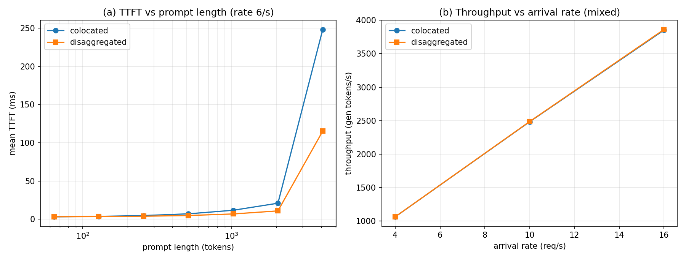

Prefill/decode disaggregation simulator: TTFT vs transfer-cost tradeoffs, quantified
In a standard (colocated) LLM serving setup, the same workers handle both prefill (processing the prompt, compute-bound) and decode (generating tokens one by one, memory-bandwidth-bound). A new request's long prefill is batched with other requests' decode steps, so one 2048-token prompt stalls every in-flight token stream on that worker, and new requests queue behind whatever the worker is already doing. The question: how much do TTFT (time to first token) and TBT (time between tokens) improve if prefill and decode run on separate, specialized pools, and what does the KV-cache transfer between the pools cost?
Most treatments of disaggregated serving (e.g. Splitwise-style architectures) argue from hardware intuition or production traces. There is no small, reproducible model that isolates the scheduling and interference mechanics: head-of-line blocking of prefills behind decodes, KV-cache capacity limits, and the explicit transfer delay of moving the prompt KV cache over a finite interconnect. This project builds exactly that model in numpy on CPU.
A discrete-event simulator (src/llm_inference_engine/disagg_serve/sim.py):
t = 2.0 ms + 0.009 ms * batch_tokens, subject to an 8192-token KV cap per worker. A request's full prompt prefills in a single iteration alongside ongoing decodes, so long prefills directly inflate everyone else's token latency (interference), and arrivals queue behind busy workers.t = 1.5 ms + 0.002 ms/token, same KV cap). After prefill, the prompt KV cache (2 32 layers 4096 d_model prompt_len 2 bytes, fp16) transfers over a 200 GB/s interconnect (+1 ms fixed latency) before decode starts. Same total worker count (4) in both architectures.gen_len ~ Normal(256, 64). Seeded np.random.default_rng(31).Experiments (experiments/run_experiments.py) compare TTFT/TBT/throughput across the workload x rate grid, sweep prompt length to find the TTFT crossover, and sweep interconnect bandwidth to find where transfer overhead erases the win.
| Workload (high load) | Colocated TTFT | Disaggregated TTFT |
|---|---|---|
| Long prompts, mean | 40.4 ms | 17.1 ms |
| Long prompts, p99 | 382.5 ms | 166.2 ms |
| Short prompts, mean | 7.1 ms | 4.9 ms |
Disaggregation starts winning at ~81-token prompts; below that the KV-transfer tax dominates. The win is erased below ~74 GB/s interconnect (at 5 GB/s, disaggregated TTFT is ~10x worse). Two seeded runs byte-identical.

experiments/run_experiments.py — re-running reproduces these exactly.src/llm_inference_engine/disagg_serve/
sim.py # discrete-event sim: colocated vs disaggregated
04-disagg-serve/
experiments/run_experiments.py # workload grid + crossover brackets
results/ # results.md + charts.png (generated)
Full source, tests, and experiment code: 04-disagg-serve/ ·
Run: cd 04-disagg-serve && python3 experiments/run_experiments.py